| 
| |||
|---|---|---|---|---|

| 1 | 1 | 2 | 2 |
|
| 1 | 1 | 1 | |
| 1 | 1 | |||
|
| 1 |
Problem #1: Given two polyominoes P1 and P2 with the same area, what is the smallest area of a polyomino S so that one copy of P1 and S can tile the same shape as one copy of P2 and S? Most of the answers for pentominoes are small, but some of the answers are surprisingly large. Can you find the polyominoes S for the largest cases? Can you find a polyomino S that works for the unknown case? What are the largest answers for hexominoes and larger polyominoes? What about other polyforms, like polyhexes and polyiamonds?
Problem #2: Given two polyominoes P1 and P2 with the same area, and a positive integer n, what is the smallest shape S that can be tiled by P1 in exactly n ways, and can be tiled by P2 in exactly n ways? Can you find smaller solutions for the triominoes? What are best results for larger n? What about the pairs of tetrominoes? What about other polyforms, like polyhexes and polyiamonds? What if we want S that can be tiled in n ways by P1, P2, or P3?
|
|
| |||
|---|---|---|---|---|
|
| 1 | 1 | 2 | 2 |
|
| 1 | 1 | 1 | |
| 1 | 1 | |||
|
| 1 |
The solutions for pentominoes are more interesting. There are several cases that require area 5 or more, one really huge solution, and one unsolved case.

| 
| ||||||||||||||||||||||||||||||||||||||||||||||||||||||||||||||||||||||||||||||||||||||||||||||||||||||||||
|---|---|---|---|---|---|---|---|---|---|---|---|---|---|---|---|---|---|---|---|---|---|---|---|---|---|---|---|---|---|---|---|---|---|---|---|---|---|---|---|---|---|---|---|---|---|---|---|---|---|---|---|---|---|---|---|---|---|---|---|---|---|---|---|---|---|---|---|---|---|---|---|---|---|---|---|---|---|---|---|---|---|---|---|---|---|---|---|---|---|---|---|---|---|---|---|---|---|---|---|---|---|---|---|---|---|---|---|
| 2 | 5 | 1 | 1 | 2 | 2 | 4 | 2 | 5 | 5 | 5 | |||||||||||||||||||||||||||||||||||||||||||||||||||||||||||||||||||||||||||||||||||||||||||||||||
| 1 | 1 | 1 | 1 | 1 | 1 | 1 | 1 | 1 | 1 | ||||||||||||||||||||||||||||||||||||||||||||||||||||||||||||||||||||||||||||||||||||||||||||||||||
|
| 1 | 1 | 1 | 1 | 2 | 1 | 1 | 1 | 23
| 1 | 1 | 1 | 2 | 1 | 1 | 1 | 7
|
| 1 | 1 | 2 | 1 | 1 | 1 | 1
|
| 1 | 1 | 1 | 1 | 1 | ?
|
| 1 | 1 | 1 | 1 | 5
|
| 4 | 1 | 1 | 5
|
| 1 | 1 | 1
|
| 1 | 1
|
| 5
| |
| 5 | 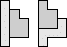 | 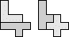 | 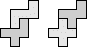 |
| 7 | 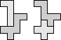 | 23 | 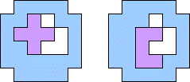 (Corey Plover) |
In 2012, George Sicherman studied the problem for triples of pentominoes, finding these results:
| 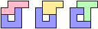 | 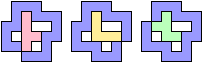 | 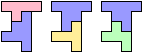 |
| 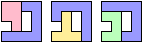 | 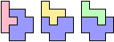 |
The largest solutions for hexominoes are below.
| 6 | 
| 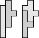 | 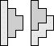 | 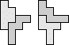 |
| 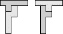 | 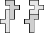 | 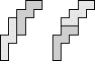 |
| 7 | 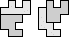 | 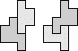 |
| 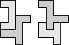 | 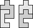 | 
| 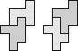 |
| 8 |
| 9 | 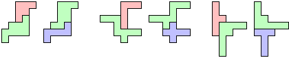 (George Sicherman) | 11 | 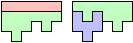 (George Sicherman) |
| 12+ | 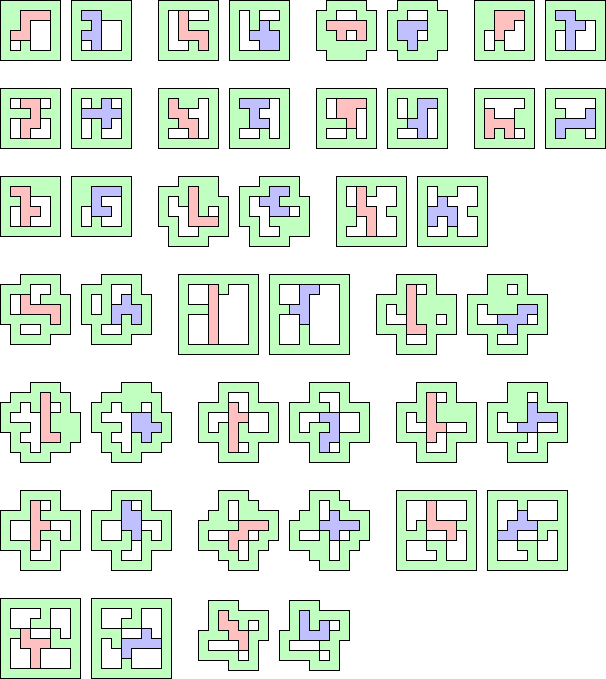 (George Sicherman) |
Here are the unsolved cases for hexomino pairs.

Here are some large cases for heptomino pairs:
Corey Plover is not a big fan of flipping polyominoes over, so he was interested in the solutions with this restriction.
|
|
| ||||||||||||||||||||||||||||||||||||||||||||||||||||||||||||||||||||||||||||||||||||||||||||||||||||||||||||||||||||||||||||||||||||||||||||||||||||||||||||||||||||||||||||||||||||||||||||||||||||||||||||||||||||||||||||||||||||||||||||||||||||||||||
|---|---|---|---|---|---|---|---|---|---|---|---|---|---|---|---|---|---|---|---|---|---|---|---|---|---|---|---|---|---|---|---|---|---|---|---|---|---|---|---|---|---|---|---|---|---|---|---|---|---|---|---|---|---|---|---|---|---|---|---|---|---|---|---|---|---|---|---|---|---|---|---|---|---|---|---|---|---|---|---|---|---|---|---|---|---|---|---|---|---|---|---|---|---|---|---|---|---|---|---|---|---|---|---|---|---|---|---|---|---|---|---|---|---|---|---|---|---|---|---|---|---|---|---|---|---|---|---|---|---|---|---|---|---|---|---|---|---|---|---|---|---|---|---|---|---|---|---|---|---|---|---|---|---|---|---|---|---|---|---|---|---|---|---|---|---|---|---|---|---|---|---|---|---|---|---|---|---|---|---|---|---|---|---|---|---|---|---|---|---|---|---|---|---|---|---|---|---|---|---|---|---|---|---|---|---|---|---|---|---|---|---|---|---|---|---|---|---|---|---|---|---|---|---|---|---|---|---|---|---|---|---|---|---|---|---|---|---|---|---|---|---|---|---|---|---|---|---|---|---|---|---|
| 2 | 2 | 7 | 1 | 1 | 1 | 1 | 2 | 2 | 2 | 4 | 2 | ? | ? | 5 | 5 | 5 | |||||||||||||||||||||||||||||||||||||||||||||||||||||||||||||||||||||||||||||||||||||||||||||||||||||||||||||||||||||||||||||||||||||||||||||||||||||||||||||||||||||||||||||||||||||||||||||||||||||||||||||||||||||||||||||||||||||||||||
| 1 | 1 | 2 | 1 | 1 | 1 | 1 | 2 | 1 | 1 | 1 | 1 | 1 | 2 | 1 | 1 | ||||||||||||||||||||||||||||||||||||||||||||||||||||||||||||||||||||||||||||||||||||||||||||||||||||||||||||||||||||||||||||||||||||||||||||||||||||||||||||||||||||||||||||||||||||||||||||||||||||||||||||||||||||||||||||||||||||||||||||
| 1 | 1 | 2 | 1 | 1 | 2 | 1 | 1 | 1 | 1 | 1 | 1 | 1 | 2 | 1 | |||||||||||||||||||||||||||||||||||||||||||||||||||||||||||||||||||||||||||||||||||||||||||||||||||||||||||||||||||||||||||||||||||||||||||||||||||||||||||||||||||||||||||||||||||||||||||||||||||||||||||||||||||||||||||||||||||||||||||||
|
| 1 | 1 | 1 | 1 | 1 | 1 | 1 | 2 | 1 | 1 | 1 | 1 | 1 | 23
| 1 | 1 | 1 | 2 | 1 | 1 | 2 | 1 | 2 | 1 | 1 | 2 | ?
|
| 1 | 1 | 1 | 2 | 1 | 2 | 1 | 1 | 2 | 2 | 1 | ?
|
| 1 | 1 | 2 | 1 | 2 | 1 | 1 | 1 | 2 | 1 | 1
|
| 2 | 1 | 1 | 2 | 1 | 1 | 1 | 1 | 2 | 1
|
| 2 | 1 | 1 | 1 | 1 | 1 | 2 | 1 | ?
|
| 1 | 1 | 1 | 1 | 1 | 1 | 2 | ?
|
| 1 | 1 | 1 | 1 | 1 | 1 | 23
|
| ? | 1 | 1 | 1 | 1 | 23
|
| 1 | 1 | 1 | 1 | 1
|
| 1 | 2 | 1 | 1
|
| 1 | 2 | 1
|
| 2 | 5
|
| 5
| |
Here are the largest known solutions:
| 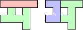 (George Sicherman) | 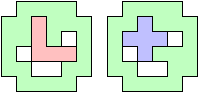 (George Sicherman) | 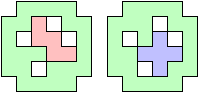 (George Sicherman) |
Corey Plover noticed that there are smaller solutions if we allow king-connected polyominoes or disconnected polyominoes:
(Corey Plover) | (Corey Plover) |
George Sicherman investigated pentahexes. Here are the largest solutions.
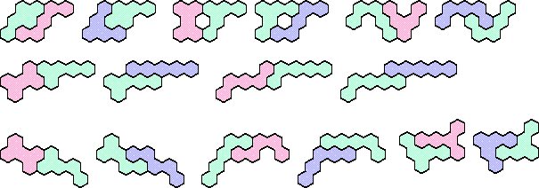
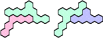 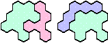

Here are the unsolved pentahex pairs.
George Sicherman also investigated polyiamonds. Here are the largest solutions for the hexiamonds.
And here are the largest solutions for heptiamonds.
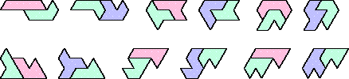
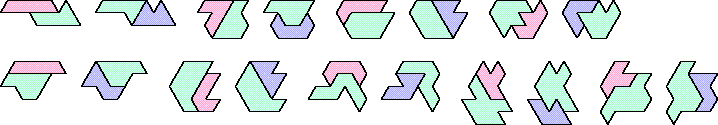
| 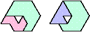 |  | 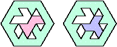 |
Here are the unsolved heptiamond pairs.
George Sicherman also investigated polyaboloes. Here are the largest solutions for the triaboloes and tetraboloes.
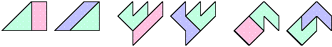
Here are the unsolved tetrabolo pairs.
George Sicherman also investigated polylines. Here are the largest solutions for tetralines.
Here are the unsolved tetraline pairs.
George Sicherman also gave this tetraking example: 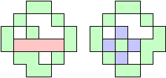
George Sicherman found that every pair of pentacubes is equable. Here are the largest solutions:
George Sicherman also investigated pentapents. Here are his solutions:
| 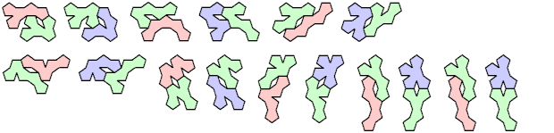 |
| 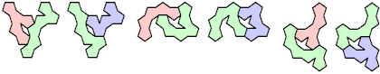 |
| 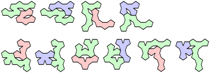 |
Here are the unsolved cases:
Here are the smallest known solutions for a domino and triomino:

| ||||||||||
|---|---|---|---|---|---|---|---|---|---|---|
| ||||||||||
|
Here are the smallest known solutions for triominoes:
| ||||||||||
|
Here are the smallest known solutions for tetrominoes:
| |||||||||

|
| ||||||||
|
|
|
| ||||
|---|---|---|---|---|---|
|
|
| ||||||
|---|---|---|---|---|---|---|
|
Here are the smallest known solutions for tetriamonds:
|
Here are the smallest known solutions for pentiamonds:
|
|
| |||||||||
|
| ||||||||||
|
Here are the smallest known solutions for dihexes and trihexes:
| |||||
| |||||
|
Here are the smallest known solutions for trihexes:
|
| |||||||||||
|
If you can extend any of these results, please e-mail me. Click here to go back to Math Magic. Last updated 4/19/09.